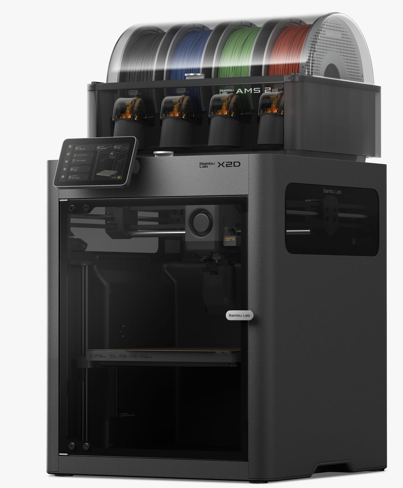

AvançadoBambu Lab X2D Combo
Bico duplo e câmara aquecida em tamanho compacto: um bico faz a peça e o outro faz o suporte, que sai fácil e limpo.
- Garantia de 1 ano do fabricante
- Original, com nota fiscal
- Envio para todo o Brasil · frete à parte
Para quem é a X2D Combo
Quem busca acabamento premium, peças técnicas e combinações de materiais (rígido + flexível) sem ocupar o espaço de uma série H.
O que ela faz bem
- Dois bicos: suporte de outro material que descola sem marcas
- Combina materiais na mesma peça (ex.: PLA rígido + TPU flexível)
- Trocas de cor mais rápidas e com bem menos desperdício
- Câmara aquecida ativa a 65 °C e filtragem HEPA de 3 estágios
- Até 1000 mm/s, 31 sensores e IA
- Certificada para uso em casa (qualidade do ar) e < 50 dB
Limites
- Volume de 25,6 cm (menor que a série H)
- Bicos até 300 °C (a série H chega a 350 °C)
- Bico auxiliar com algumas restrições de material
É como ter duas canetas na mão: uma escreve, a outra faz o rascunho que depois se apaga.
O que muda em relação ao modelo anterior
Em relação à P2S: segundo bico, câmara aquecida de verdade, filtragem HEPA, 1000 mm/s e tela de alta resolução.
Use o bico auxiliar só para o suporte, com um material de interface próprio (como o "Support for PLA"): ele descola limpo e a face de baixo da peça fica lisa.
Todas as especificações
Dados oficiais da Bambu Lab, traduzidos e organizados. "Maior peça" é o tamanho máximo do que a impressora imprime; "medidas" é o tamanho da própria máquina.
Corpo
- Tecnologia
- FDM – fabricação por filamento fundido
- Volume (bico principal)
- 256 × 256 × 260 mm
- Volume (bico auxiliar / dois bicos)
- 235,5 × 256 × 256 mm
- Arquitetura
- CoreXY fechada, bico duplo
- Chassi / carcaça
- Plástico e aço / plástico, vidro e metal
Cabeçote (toolhead)
- Extrusora principal
- Servo PMSM de alta precisão, engrenagem de aço endurecido
- Extrusora auxiliar
- Motor de passo, engrenagem de aço endurecido
- Troca entre bicos
- Mecânica (engrenagem + gatilho), sem motor extra; testada em mais de 1 milhão de trocas
- Bicos
- Aço endurecido; 0,4 mm incluso; 0,2 · 0,4 · 0,6 · 0,8 mm; troca sem ferramentas
- Temperatura máx. do bico
- 300 °C
- Cortador de filamento
- Integrado
- Diâmetro do filamento
- 1,75 mm
Mesa (heatbed)
- Placas compatíveis
- Textured PEI, Smooth PEI, Cool Plate SuperTack, Engineering Plate
- Temperatura máx. da mesa
- 120 °C
Velocidade
- Velocidade máx. do cabeçote
- 1000 mm/s
- Aceleração máx.
- 20.000 mm/s²
- Vazão máx. do hotend
- 40 mm³/s padrão · 65 mm³/s com hotend de alto fluxo opcional (ABS a 280 °C)
Câmara e filtragem
- Aquecimento ativo da câmara
- Sim, até 65 °C
- Filtragem em 3 estágios
- Pré-filtro G3 + filtro HEPA H12 + carvão ativado granulado de casca de coco
- Filtragem de VOC / partículas
- Sim / sim
Refrigeração
- Ventoinhas
- Peça, hotend, placa principal, exaustão da câmara, circulação de calor e auxiliar da peça — em malha fechada
- Entrada de ar
- Dupla (esquerda e direita) para resfriar PLA rápido e manter balanços e pontes limpos
Filamentos
- Bico principal
- PLA, PETG, ABS, ASA, TPU, PET, PA, PC, PVA, suportes (PLA, PLA/PETG, ABS, PA/PET) e versões com fibra de carbono/vidro de PLA, PETG, ABS, ASA, PA6, PAHT, PPA, PET
- Bico auxiliar
- Quase os mesmos (exceto PLA Aero e PPA); PLA Silk, PETG-CF, ASA-CF, PA6-CF e TPU com cautela
Sensores, câmeras e IA
- Câmera ao vivo
- 1920 × 1080
- Câmera do cabeçote
- 1600 × 1200
- IA
- Confere a mesa antes de imprimir; detecta espaguete, bolota no bico e entupimento da calha de purga
- Sensores
- 31 no total: porta, fim de filamento, emaranhado, odometria (com AMS), 10 de temperatura, fluxo de ar, retomada após queda de energia
Elétrica
- Tensão
- Versão 220 V: 200–240 V CA · versão 110 V: 100–120 V CA (50/60 Hz)
- Potência máxima
- 1600 W em 220 V · 1100 W em 110 V
- Consumo em regime
- PLA: 250 W · PC: 550 W
- Ambiente de uso
- 10 – 30 °C
Eletrônica
- Tela
- 5" sensível ao toque, 1280 × 720
- Armazenamento
- 8 GB eMMC interno + porta USB
- Processadores
- Movimento: Cortex-M4 dual-core + Cortex-M7 · Aplicação: ARM quad-core com NPU dedicada
- Rede
- Wi-Fi dual-band 2,4/5 GHz (802.11 a/b/g/n); sem Ethernet
Software
- Fatiador
- Bambu Studio; aceita outros fatiadores (G-code), sem alguns recursos avançados
- Sistemas
- Windows, macOS e Linux
Dimensões
- Medidas da impressora (L × P × A)
- 392 × 406 × 478 mm
- Peso líquido da impressora
- 16,25 kg
Recursos e automação
- Precisão
- Vision Encoder: precisão de 50 µm em todo o volume, compensando desgaste
- Encaixe de peças
- Compensação automática de furos e contornos (Bambu Studio)
- Ruído
- < 50 dB no modo silencioso
- Qualidade do ar
- Certificada UL 2904 com PLA Basic e PETG Basic
Sistema multicor incluso: AMS 2 Pro
- Posições
- 4 rolos
- Formato
- Fechado e vedado; respiro eletromagnético que abre para secar e fecha para guardar
- Secagem
- Ativa até 65 °C (com ambiente acima de 25 °C); gira os rolos durante a secagem; 30% mais rápida que aquecimento selado
- Motor de alimentação
- Servo PMSM sem escovas: alimenta 60% mais rápido (economiza ~10 min a cada 100 trocas)
- RFID
- Reconhece filamentos oficiais e ajusta cor, tipo e secagem sozinho
- Sensores
- Temperatura e umidade em tempo real (tela, Bambu Studio e Bambu Handy)
- Medidas / peso
- 372 × 280 × 226 mm; 2,5 kg; carretéis de 50 a 68 mm de largura; entrada 24 V 4 A
- Compatível com
- Todas as impressoras Bambu Lab (algumas precisam de acessórios de ligação)
Fonte: bambulab.com/en/x2d/specs · bambulab.com/en/x2d · consulta em 04/10/2026. Itens marcados "(rev.)" vêm de revendedores.
Do desempacotar à primeira peça
Tem dois bicos. Na calibração inicial a máquina ajusta os dois, então não interrompa.
- Retire travas, espumas e abraçadeiras de transporte
- Coloque o AMS 2 Pro em cima e ligue cabo e tubos
- Siga o assistente da tela: idioma, região e Wi-Fi
- Vincule no Bambu Handy e atualize o firmware
- Rode a calibração completa, que inclui os dois bicos
- Imprima o modelo de teste do armazenamento interno
Antes de comprar
Quais são as formas de pagamento?
À vista no Pix pelo preço do site, ou parcelado em até 12x no cartão de crédito (consulte a taxa do cartão). Vendas a prazo estão sujeitas a verificação.
Quanto custa o frete e qual o prazo?
O frete é por conta do cliente e é calculado no orçamento, conforme o endereço de entrega. Os modelos de entrada (série A) estão a pronta entrega; os demais são sob encomenda. Disponibilidade e prazo são confirmados pelo WhatsApp antes do fechamento.
A impressora tem garantia?
Sim: garantia de 1 ano do fabricante contra defeitos de fabricação, somada à garantia legal do Código de Defesa do Consumidor.
Posso desistir da compra?
Sim. Em compras pela internet ou pelo WhatsApp, você pode desistir em até 7 dias corridos após o recebimento. A coleta não tem custo. Veja a política completa.
A impressora vem com nota fiscal?
Sim. Todos os equipamentos são novos, originais Bambu Lab e vendidos com nota fiscal.